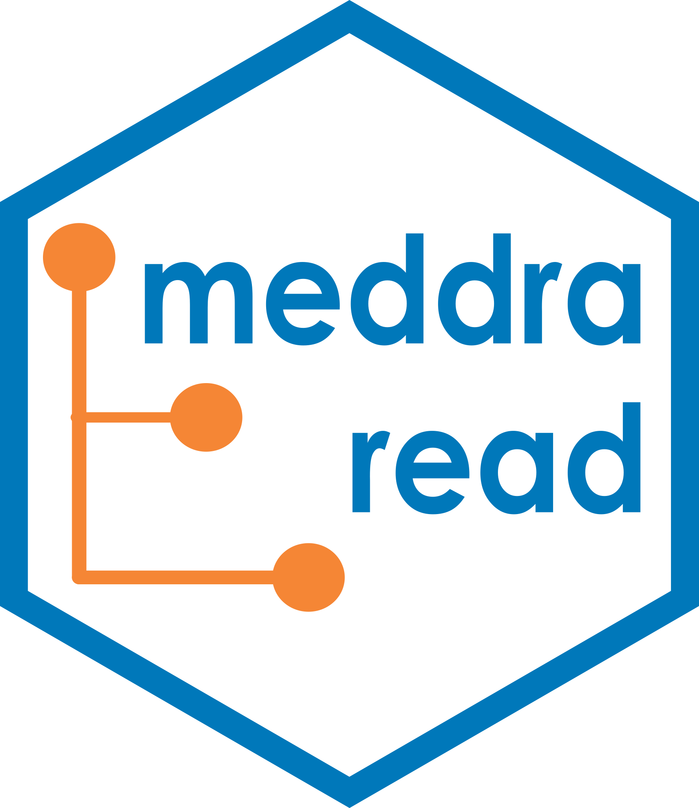

Expand Standardised MedDRA Queries (SMQs) into per-LLT membership rows
join_smq.RdFlattens each SMQ in smq_list.asc against smq_content.asc and attaches the
full MedDRA hierarchy, producing the dictionary term list needed to flag
adverse events (which are coded at the Lowest Level Term level) and to build
SMQ\* or CQ\* variables. Specifically it:
Arguments
- data
MedDRA source data from
read_meddra(). Must include thesmq_list.ascandsmq_content.ascelements, as well as the hierarchy files required byjoin_meddra().
Value
A data.frame with one row per (SMQ x expanded LLT x SOC path) and the
columns smq_code, smq_name, smq_level, term_scope, term_category,
term_weight, term_status, soc_code, soc_name, soc_abbrev,
hlgt_code, hlgt_name, hlt_code, hlt_name, pt_code, pt_name,
pt_soc_code, llt_code, llt_name, llt_currency, and primary_soc_fg.
term_scope is 1 (broad) or 2 (narrow); for Preferred Term members the
scope is inherited by all of the Preferred Term's Lowest Level Terms.
Details
resolves sub-SMQ references (term level 0) recursively, so a hierarchical SMQ is expanded through all of its subordinate SMQs;
expands Preferred Term members (term level 4) down to every Lowest Level Term beneath the Preferred Term; and
attaches Lowest Level Term members (term level 5) directly.
The hierarchy on each row comes from join_meddra(), so a Preferred Term that
maps to more than one System Organ Class contributes one row per SOC path
(filter on primary_soc_fg == "Y" for a single SOC per PT). Every SMQ in
smq_list.asc is expanded, so a subordinate SMQ can also be selected on its
own via its smq_code.
See also
join_meddra() for the underlying hierarchy flattening.
Examples
# The package bundles a small fictional MedDRA dataset for illustration.
# For real work, replace this with the path to your licensed MedDRA release.
example_dir <- system.file("example_meddra", package = "meddra.read")
meddra_raw <- read_meddra(example_dir)
# Expand every SMQ into one row per Lowest Level Term, with the full
# SOC -> HLGT -> HLT -> PT -> LLT hierarchy attached to each row.
smq_df <- join_smq(meddra_raw)
smq_df
#> smq_code smq_name smq_level term_scope term_category term_weight
#> 1 10000001 Example Headache SMQ 2 1 A 0
#> 2 10000001 Example Headache SMQ 2 1 A 0
#> term_status soc_code soc_name soc_abbrev hlgt_code
#> 1 A 10000100 Example Nervous System Disorders ExNS 10001100
#> 2 A 10000100 Example Nervous System Disorders ExNS 10001100
#> hlgt_name hlt_code hlt_name pt_code
#> 1 Example Neurological Disorders 10001110 Example Headache Disorders 10001111
#> 2 Example Neurological Disorders 10001110 Example Headache Disorders 10001111
#> pt_name pt_soc_code llt_code llt_name llt_currency
#> 1 Example Headache 10000100 10001111 Example Headache Y
#> 2 Example Headache 10000100 10001112 Example Head Pain N
#> primary_soc_fg
#> 1 Y
#> 2 Y
# Typical follow-on: keep only broad-scope, current LLTs for merging.
subset(smq_df, term_scope == 1 & llt_currency == "Y")
#> smq_code smq_name smq_level term_scope term_category term_weight
#> 1 10000001 Example Headache SMQ 2 1 A 0
#> term_status soc_code soc_name soc_abbrev hlgt_code
#> 1 A 10000100 Example Nervous System Disorders ExNS 10001100
#> hlgt_name hlt_code hlt_name pt_code
#> 1 Example Neurological Disorders 10001110 Example Headache Disorders 10001111
#> pt_name pt_soc_code llt_code llt_name llt_currency
#> 1 Example Headache 10000100 10001111 Example Headache Y
#> primary_soc_fg
#> 1 Y